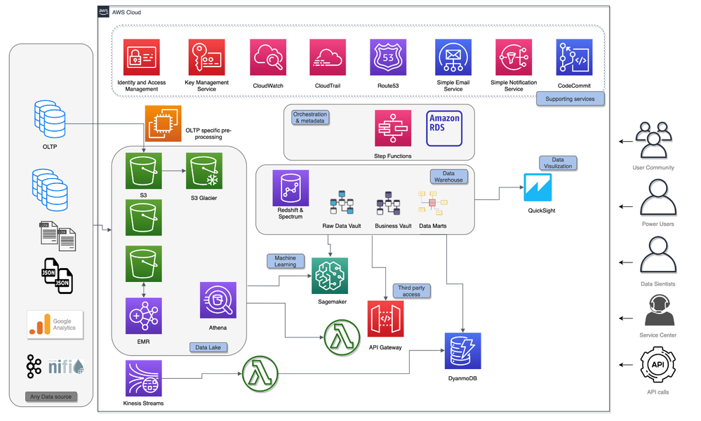
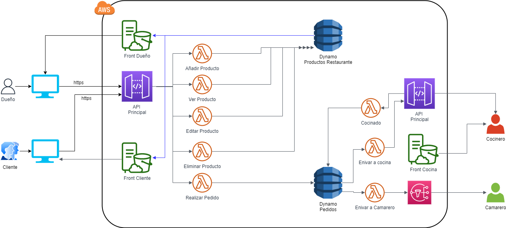
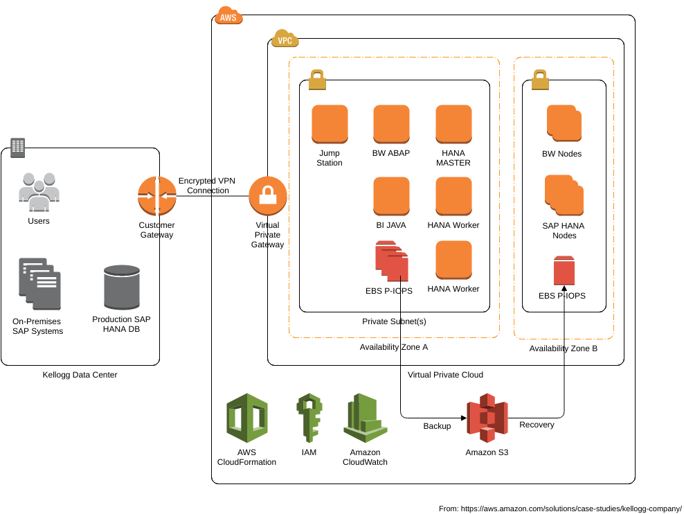

Conocimiento y proyectos AWS
AWS Certified Cloud Practitioner
Esta credencial ayuda a que las organizaciones identifiquen y desarrollen talentos con conocimientos esenciales relacionados con la implementación de iniciativas en la nube. La obtención de AWS Certified Cloud Practitioner acredita la capacidad para operar en la nube sin problemas y los conocimientos básicos de AWS.
AWS Certified Developer - Associate
Esta credencial ayuda a que las organizaciones identifiquen y desarrollen talentos con habilidades esenciales para la implementación de iniciativas en la nube. Obtener la certificación AWS Certified Developer - Associate valida la capacidad de escribir e implementar aplicaciones basadas en la nube.


